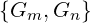

| Up | Prev | PrevTail | Tail |
This package provides an alternative method for computing traces of Dirac gamma matrices, based on an algorithm by Cvitanovich that treats gamma matrices as 3-j symbols.
Authors: V.Ilyin, A.Kryukov, A.Rodionov, A.Taranov.
In modern high energy physics the calculation of Feynman diagrams are still very important. One of the difficulties of these calculations are trace calculations. So the calculation of traces of Dirac’s γ-matrices were one of first task of computer algebra systems. All available algorithms are based on the fact that gamma-matrices constitute a basis of a Clifford algebra:
|
 = 2gmn. |
We present the implementation of an alternative algorithm based on treating of gamma-matrices as 3-j symbols (details may be found in [IKRT89, Ken82]).
The program consists of 5 modules described below.
Author: A.P.Kryukov
Purpose:interface REDUCE and CVIT package
RED_TO_CVIT_INTERFACE module is intended for connection of REDUCE with main module of CVIT package. The main idea is to preserve standard REDUCE syntax for high energy calculations. For realization of this we redefine SYMBOLIC PROCEDURE ISIMP1 from HEPhys module of REDUCE system.
After loading CVIT package user may use switch CVIT which is ON by default. If switch CVIT is OFF then calculations of Diracs matrices traces are performed using standard REDUCE facilities. If CVIT switch is ON then CVIT package will be active.
RED_TO_CVIT_INTERFACE module performs some primitive simplification and control input data independently. For example it remove GmGm, check parity of the number of Dirac matrices in each trace etc. There is one principal restriction concerning G5-matrix. There are no closed form for trace in non-integer dimension case when trace include G5-matrix. The next restriction is that if the space-time dimension is integer then it must be even (2,4,6,...). If these and other restrictions are violated then the user get corresponding error message. List of messages is included.
Author: A.Ya.Rodionov
Purpose: graphs reduction
CVITMAPPING module is intended for diagrams calculation according to Cvitanovic - Kennedy algorithm. The top function of this module CALC_SPUR is called from RED_TO_CVIT_INTERFACE interface module. The main idea of the algorithm consists in diagram simplification according to rules (1.9’) and (1.14) from [1]. The input data - trace of Diracs gamma matrices (G-matrices) has a form of a list of identifiers lists with cyclic order. Some of identifiers may be identical. In this case we assume summation over dummy indices. So trace Sp(GbGr).Sp(GwGbGcGwGcGr) is represented as list ((b r) (w b c w c r)).
The first step is to transform the input data to “map” structure and then to reduce the map to a “simple” one. This transformation is made by function TRANSFORM_MAP_ (top function). Transformation is made in three steps. At the first step the input data are transformed to the internal form - a map (by function PREPARE_MAP_). At the second step a map is subjected to Fierz transformations (1.14) (function MK_SIMPLE_MAP_). At this step of optimization can be maid (if switch CVITOP is on) by function MK_FIRZ_OP. In this case Fierzing starts with linked vertices with minimal distance (number of vertices) between them. After Fierz transformations map is further reduced by vertex simplification routine MK_SIMPLE_VERTEX using (1.9’). Vertices reduced to primitive ones, that is to vertices with three or less edges. This is the last (third) step in transformation from input to internal data.
The next step is optional. If switch CVITBTR is on factorisation of bubble (function FIND_BUBBLES1) and triangle (function FIND_TRIANGLES1) submaps is made. This factorisation is very efficient for “wheel” diagrams and unnecessary for “lattice” diagrams. Factorisation is made recursively by substituting composed edges for bubbles and composed vertices for triangles. So check (function SORT_ATLAS) must be done to test possibility of future marking procedure. If the check fails then a new attempt to reorganize atlas (so we call complicated structure witch consists of MAP, COEFFicient and DENOMinator) is made. This cause backtracking (but very seldom). Backtracking can be traced by turning on switch CVITRACE. FIND_BUBLTR is the top function of this program’s branch.
Then atlases must be prepared (top function WORLD_FROM_ATLAS) for final algebraic calculations. The resulted object called “world” consists of edges names list (EDGELIST), their marking variants (VARIANTS) and WORLD1 structure. WORLD1 structure differs from WORLD structure in one point. It contains MAP2 structure instead of MAP structure. MAP2 is very complicated structure and consist of VARIANTS, marking plan and GSTRAND. (GSTRAND constructed by PRE!-CALC!-MAP_ from INTERFIERZ module.) By marking we understand marking of edges with numbers according to Cvitanovic - Kennedy algorithm.
The last step is performed by function CALC_WORLD. At this step algebraic calculations are done. Two functions CALC_MAP_TAR and CALC_DENTAR from INTERFIERZ module make algebraic expressions in the prefix form. This expressions are further simplified by function REVAL. This is the REDUCE system general function for algebraic expressions simplification. REVAL and SIMP!* are the only REDUCE functions used in this module.
There are also some functions for printing several internal structures: PRINT_ATLAS, PRINT_VERTEX, PRINT_EDGE, PRINT_COEFF, PRINT_DENOM. This functions can be used for debugging.
If an error occur in module CVITMAPPING the error message “ERROR IN MAP CREATING ROUTINES” is displayed. Error has number 55. The switch CVITERROR allows to give full information about error: name of function where error occurs and names and values of function’s arguments. If CVITERROR switch is on and backtracking fails message about error in SORT_ATLAS function is printed. The result of computation however will be correct because in this case factorized structure is not used. This happens extremely seldom.
Author: A.Taranov
Purpose: evaluate single Map
Module INTERFIERZ exports to module CVITMAPPING three functions: PRE-CALC-MAP_, CALC-MAP_TAR, CALC-DENTAR.
Function PRE-CALC-MAP_ is used for preliminary processing of a map. It returns a list of the form (STRAND NEWMAP TADEPOLES DELTAS) where STRAND is strand structure described in MAP-TO-STRAND module. NEWMAP is a map structure without “tadepoles” and “deltas”. “Tadepole” is a loop connected with map with only one line (edge). “Delta” is a single line disconnected from a map. TADEPOLES is a list of “tadepole” submaps. DELTAS is a list (CONS E1 E2) where E1 and E2 are
Function CALC_MAP_TAR takes a list of the same form as returned by PRE-CALC-MAP_, a-list, of the form (... edge . weight ... ) and returns a prefix form of algebraic expression corresponding to the map numerator.
Function CALC-DENTAR returns a prefix form of algebraic expression corresponding to the map denominator.
Module EVAL-MAP exports to module INTERFIERZ functions MK-NUMR and STRAND-ALG-TOP.
Function MK-NUMR returns a prefix form for some combinatorial coefficient (Pohgammer symbol).
Function STRAND-ALG-TOP performs an actual computation of a prefix form of algebraic expression corresponding to the map numerator. This computation is based on a “strand” structure constructed from the “map” structure.
Module MAP-TO-STRAND exports functions MAP-TO-STRAND, INCIDENT1 to module INTERFIERZ and functions DELETEZ1, CONTRACT-STRAND, COLOR-STRAND to module EVAL-MAPS.
Function INCIDENT1 is a selector in “strand” structure. DELETEZ1 performs auxiliary optimization of “strand”. MAP-TO-STRAND transforms “map” to “strand” structure. The latter is describe in program module.
CONTRACT-STRAND do strand vertex simplifications of “strand” and COLOR-STRAND finishes strand generation.
| Up | Prev | PrevTail | Front |